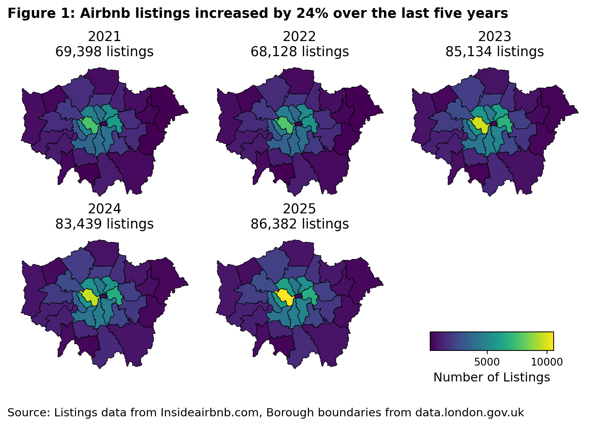
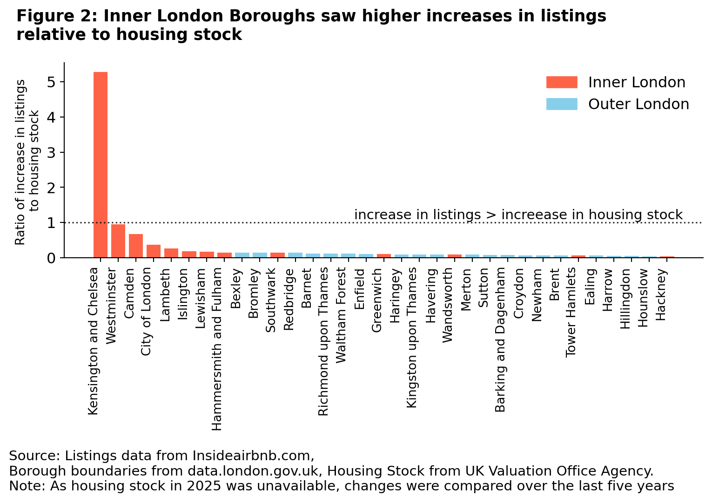
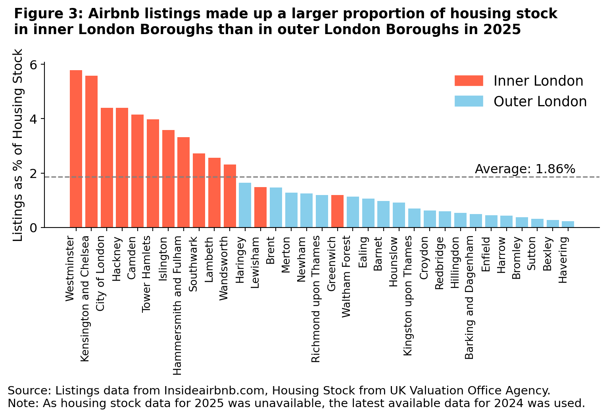
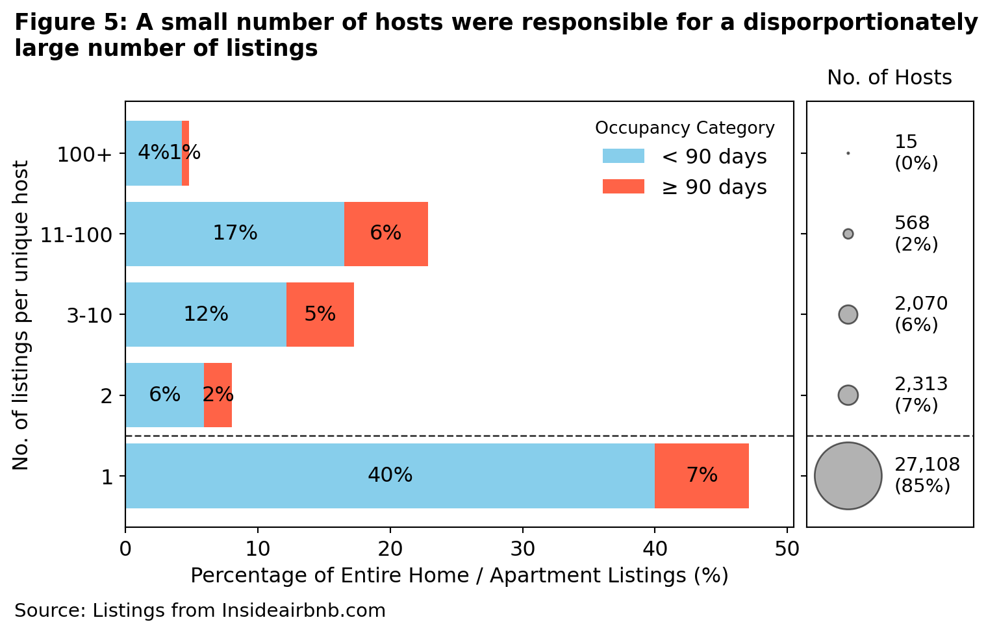
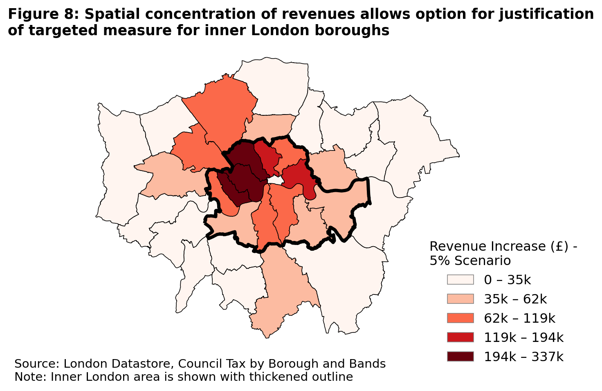

The Pythoneers’ Group Project
Priorities for Feedback
(Include write-up here on areas for feedback)
Finding a balance: Airbnb’s growth, impact and benefits for London
Executive Summary
The opposition’s proposal is likely to gain some traction due to public awareness of recent protests and measures taken against Airbnb in other holiday destinations1 , and a perception (due to repeated promises by more than one UK government to build more housing) that there is a shortage of housing in the UK 2. The discovery of the Mayor’s aide’s housing circumstances has stirred media interest, feeding into the debate about the current unbalanced housing market and suspicions of political hypocrisy3.
While studies have investigated the potentially undesirable consequences for areas that host large proportions of Airbnb properties, such as increased crime rates and anti-social behaviour, the opposition’s proposal focuses on the impact of Airbnb on housing stock, and this report does likewise.
This report draws from data from Inside Airbnb4, to evaluate the scale and nature of Airbnb’s penetration into the London property market, examining the implications and recommendations for action. We also discuss limitations of the data at the end of the report.
In summary, we conclude that:
- London’s Airbnb listings have expanded faster than housing supply, particularly in inner boroughs5, heightening market pressures and public concern.
- Many entire-home listings exceed the 90-day limit, with potential regulatory breaches concentrated among multi-listing “professional” landlords.
- The opposition’s proposed council tax surcharge is a blunt and politically difficult tool. Effective alternatives include landlord registration, enforcement of business rates for commercial operators or a tourist tax, which targets problematic hosts without disadvantaging ordinary residents who rely on modest hosting income.
1. Is Airbnb ‘out of control’ in London?
The opposition are behind the times: the increase in short-term lets and its potential to damage the housing supply is a concern that the Mayor’s office had already raised and taken concrete steps to tackle.
Since 2015, London landlords letting their property for more than 90 days per year have been required to obtain planning permission for a change of use. This planning permission requirement seeks to prevent permanent housing from being converted into de facto holiday accommodation. Airbnb and other equivalent platforms are therefore under far more “control” in London than in many European cities. More recently, the Mayor has proposed both a landlord registration system and a licensing system.
We consider below what the data reveal about
The growth of Airbnbs relative to London housing stock; and
Whether landlords are flouting the planning permission requirement.
How many Airbnbs are there in London?
Since 2021, London has seen a notable increase in Airbnb listings, rising from 69,402 to 86,383 listings, a 24% increase (Figure 1).
Most of the increase occurred between 2022-2023 (24%), with new listings concentrated in inner London:
Specifically, Westminster, Camden, Southwark, Lambeth and Kensington and Chelsea saw the highest increase in listings.
Westminster alone added 2,947 listings, constituting a 39% increase within the borough.
In contrast, between 2020 and 2024, London’s housing stock grew from 3.68M to 3.81M properties: a relatively smaller 3.7% increase. Kensington and Chelsea saw 5 times more new Airbnb listings than new housing stock.

What is the situation in 2025?
Across all London Boroughs in 2025, the average number of listings as a percentage of housing stock was 1.86%, though 11 Boroughs exceeded this average. These 11 Boroughs were in inner London. Close to 6% of total housing stock in (‘Westminster’,) and Kensington and Chelsea were listed as an Airbnb (Figure 3). Up to 1 in 8 homes in some MSOAs in inner London were listed on Airbnb (Figure 4).
The growth of Airbnb properties therefore far outstrips the rate of growth of new housing available, particularly in inner London boroughs.
In a tight housing market, this exacerbates pressure on housing prices and rents, driving a perception that Airbnb could be “out of control” in parts of London.


Are hosts flouting the regulations?
Based on occupancy estimates6 ,12,081 entire homes / apartments were used for 90 or more nights per year (“frequent lets”). This represented more than 1 in 5 of all entire homes listings, and 1 in 8 of all listings in London.
Again, inner London boroughs showed the highest rates of intense use. Westminster, Camden and Islington had 27%, 25% and 23% of entire home listings as frequent lets respectively.
Notwithstanding the sensitivity of assumptions7, we expect this to be a conservative estimate, given the reported likelihood of multiple listings of the same property, which some owners have used to circumvent the 90 day rule8.
One action that could be taken in response to the opposition’s claims is to investigate how many of these listings are compliant with the planning permission requirement, and step up enforcement action against hosts in breach.
2. Taking back “control”?
The opposition proposes that “professional” landlords’ properties should be subject to registration and increased council tax. As above, the Mayor’s office has already proposed a registration system for landlords, and this should be made clear in any response to the opposition.
The opposition has not defined “professional” landlord nor provided details on how its proposal would be implemented. We attempt to define and scope this to aid a proper response.
What is a professional landlord?
Studies suggest that a company or individual that owns and operates 2 or more entire homes can be classed as a commercial or professional landlord. Such “multi-listing hosts” are significant drivers of increase in rent and of Airbnb’s profit in London (Cox and Slee, 2016; Todd, Musah and Cheshire, 2021).
The data show that a small number of hosts are responsible for a disproportionately large number of listings (Figure 5).
27,108 (85%) hosts own only 1 entire property (“single-listing hosts”), and they are responsible for 47% of listings.
4,966 (15%) hosts own two or more entire properties (“multi-listing hosts”), and they disproportionately make up 53% of listings.
15 (0.05%) hosts, own over 100 entire properties; between them, they own 5% of listings.
Notably, a larger proportion of properties belonging to multi-listings hosts were let out for 90 or more days (“frequent lets”) (14%), compared to properties belonging to single-listing hosts (7%).

Therefore, using the two-property threshold, 15% of Airbnb hosts currently letting entire homes in London would be treated as “professional” landlords.
We test the robustness of this analysis in a London context by:
Establishing the income earned from renting out entire homes on Airbnb.
Comparing this with the London median income, on the basis that a host earning this much could, in theory, treat this as their sole employment.
The latest (2022-23) London Data Store figures give the median income for London as £34,100.
Based on estimated revenues9,
The median single-listing host renting out their home for “standard lets” earned £4,858 a year per property, while the median multi-listing host earned £5,600.
The median single-listing “frequent lets” host earned £5,600a year per property, while multi-listing “frequent lets” hosts earned 30,300.
Using the more conservative income from single-listing hosts on standard lets, £4,858, owning 7 properties becomes the threshold to make more than the London median income.
However, with frequent lets, owning 1 properties is sufficient to make close to double the median income of London. Just two properties can generate nearly double the median income of London. Under this analysis:
Categorising any host owning two or more entire properties as a “professional” landlord is a defensible position.
The aide at the center of the current controversy would be classed as a “professional” landlord, which the Mayor should be mindful of when responding.
If the opposition’s proposal were implemented using the above definition of “professional” hosts, 30,446 properties would be subject to increased council tax, constituting 53% of all entire homes listings.
Who are London’s “professional” landlords?
Most of both single (94.0%) and multi-listing (96.1%) hosts are UK-based. However, at least one of the hosts who owns over 100 properties is a company based abroad (Dubai). Three others have names suggesting that they are companies.
X% of hosts listings do not provide a host location. This provides good basis for the Mayor to engage Airbnb to improve host registration and enforcement.
3. Evaluating the opposition’s proposal
Is council tax an appropriate additional control?
The viability of the opposition’s proposal relies on generating a fiscally significant income stream to moderate disamenities arising from the high proportion of Airbnb properties in London. They suggest relying on the council tax system.
Council tax applies to a property’s domestic classification, based on its 1991 valuation. All properties in the same band currently pay the same rate of council tax, unless an exemption applies. It is therefore not a mechanism designed to assess current commercial use or income, making it a blunt instrument for targeted market intervention.
The opposition do not explain how the council tax system might be adjusted. Notwithstanding, we note that the recent 2025 Budget outlines plans to modify the council tax system from 2028 to apply a surcharge on luxury properties, using 2026 valuations. This suggests directional flexibility in the system than historically possible, and further work to “piggyback” on these changes could be explored.
To illustrate potential revenues from council tax adjustments, we calculated the estimated revenue increase based on a 2% - 10% premium applied to the current council tax Band D rate10 for all properties operated by “professional” landlords.
| Premium Rate | Revenue Increase (London Wide) | Revenue Increase (Inner London Only) | |
|---|---|---|---|
| 0 | 2% | £1.0m | £0.7m |
| 1 | 5% | £2.5m | £1.8m |
| 2 | 10% | £5.1m | £3.7m |
Source: London Datastore, Council tax charges and bands by borough
Note: A conservative range of 2%, 5%, and 10% was chosen for simulation, given the requirement that councils proposing a >5% increase must hold a successful local referendum.
The opposition proposal could yield between £1.0m and £5.1m. Inner London boroughs, the focus of much of this debate, account for £0.7m to £3.7m of this total.
The spatial concentration of potential revenue could allow the Mayor to justify the policy as one specifically taxing central areas, where commercial exploitation of housing stock is most acute, rather than a blanket tax rise across London (Figure 8).
However, the political viability and implementation logistics of this change remain to be determined:
A targeted surcharge affecting “professional” Airbnb hosts (in the manner of the Budget’s “Mansion Tax” surcharge) is likely to see far less pushback than a general increase in council tax for all properties.
Determining which bands should be affected is not straightforward, as properties of all types and values are available for short-term let on Airbnb and other platforms.

Can we do better?
Given that some of the existing Airbnb hosts are companies, and that a great deal more would be required to register as “professional” landlords if some form of the Mayor’s (and opposition’s) proposals were carried out, an alternative that relies on an existing regulatory infrastructure might be business rates.
Business rates are triggered when a property is used for commercial purposes and are designed to identify commercial exploitation that should be liable to taxation.
The business rates requirement for short-term lets is that they must be registered once the threshold of, typically, 140 days of availability per year11 is reached. However, in practice there is room to improve enforcement, and implement tougher deterrent fines for errant landlords.
There is, therefore, a mismatch between the planning permission requirement and the business rates requirement in terms of when registration is required, which should be closed if this avenue were explored.
Another option is to introduce a form of “tourist tax”, a common approach in other countries. The Hackney Citizen estimates that such a measure could raise £240 million a year and, if implemented with care, would not necessarily reduce visitor numbers12. This would be more targeted and easily administered, without relying on property valuations or enforcement against reluctant or elusive landlords.
References
Cox, M. and Slee, T. (2016) “How Airbnb’s data hid the facts in New York City,” Inside Airbnb. Available at: https://insideairbnb.com/reports/how-airbnbs-data-hid-the-facts-in-new-york-city.pdf (Accessed: December 3, 2025).
Todd, J., Musah, A. and Cheshire, J. (2021) “Assessing the impacts of Airbnb listings on London house prices,” Environment and Planning B: Urban Analytics and City Science, 49(1), pp. 206–222. doi: https://doi.org/10.1177/23998083211001836.
Footnotes
Spain clamps down on Airbnb as tourism backlash returns for summer (BBC, 2025)↩︎
Housing targets increased to get Britain building again (Gov.uk, 2024)↩︎
Homelessness Minister Rushanara Ali quits over rent increase claims (BBC, 2025)↩︎
Inside Airbnb obtains public information on rentals available for booking at specific months through web-scraping which could contain errors or discrepancies. We further process the data to remove listings with duplicate IDs, or more than six null fields, which typically reflects the fact that entries have no reviews or incomplete information. ↩︎
We refer to the definitions of inner London / outer London boroughs as per London Plan 2021.↩︎
Occupancy estimates obtained from Inside Airbnb. First, a review rate is used to compute reviews to estimated bookings. Thereafter, the average length of stay for London was multiplied by the estimated bookings for each listing giving the occupancy rate (out of 365 days). To estimate potential breaches, we look at the subset of listings that are “entire homes / apartments”, and the occupancy rate, which estimates how many nights the listing was booked in the last 365 days, providing a useful proxy for annual use, where raw daily calendar data are unavailable.↩︎
The occupancy model assumed (a) a review rate of 50% and (b) average length of stay of 3.1 days for London. This is conservative given that Airbnb previously cited an average review rate of 78%, and, community forums have cited a range of 33% and 85% for various properties.↩︎
Estimated revenues obtained from Inside Airbnb, which is computed as a function of price and occupancy estimates. We focus on the median which provides a more accurate measure of central tendency for revenues, given the skew created by luxury homes.↩︎
For simplicity, Band D council tax was chosen as it sits in the middle of valuation bands and best represents a typical tax without unfairly skewing towards low or high property values. This is aligned with the methodology used by councils for statutory tax base computations.↩︎
https://www.gov.uk/introduction-to-business-rates/self-catering-and-holiday-let-accommodation↩︎
What London ‘tourist tax’ would look like as Sadiq Khan issues verdict – Hackney Citizen↩︎
Supporting London to continue as the world’s best destination↩︎
AirBnB dependency: The women who rely on hosting to survive in London – ReMAP blog ~ Research, Media Arts, Play↩︎